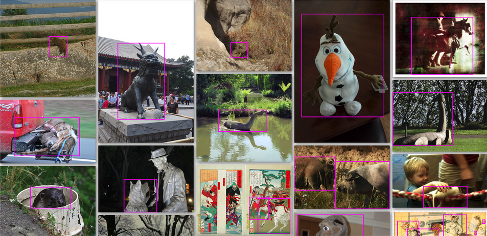
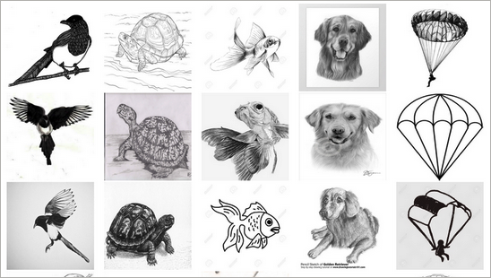
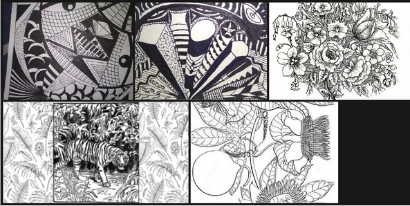
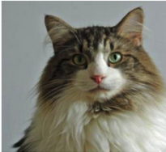
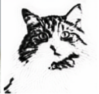
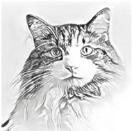
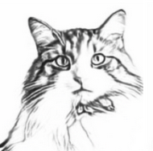
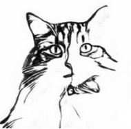
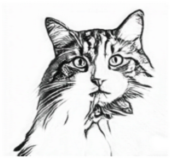

Transform normal photos into coloring book versions using CycleGAN
The CycleGAN Coloring Book Generator is a project that employs the CycleGAN architecture to transform normal photos into coloring book versions. By leveraging the power of CycleGAN, the project enables the conversion of images from one domain to another without the need for paired training data. The generator network learns to map images from the source domain to the target domain, while the discriminator network ensures the realism of the generated coloring book images. This project provides a user-friendly interface to facilitate the seamless generation of coloring book versions from user-supplied photographs.
The coloring book generator serves as an offline stress reduction alternative, providing individuals with a creative outlet to unwind and relax. Engaging in coloring activities has been shown to have therapeutic benefits, allowing individuals to escape from everyday stressors and focus their attention on a calming and enjoyable task. By using the coloring book generator, users can easily transform normal photos into coloring book versions, which encourages artistic expression and helps improve fine motor skills. This process can be seen as a hobby, allowing individuals to engage in a pleasurable and rewarding activity during their leisure time. One of the notable advantages of using the coloring book generator is the sense of achievement it brings. As users witness the transformation of their favorite photos into coloring book pages, they experience a sense of accomplishment and satisfaction. This feeling of achievement can boost self-confidence and provide a positive emotional experience. Overall, the coloring book generator serves as an enjoyable and fulfilling activity that promotes stress reduction, encourages artistic expression, improves motor skills, and provides a sense of achievement. By engaging in this offline hobby, individuals can enhance their well-being and find a creative outlet for relaxation and self-expression.
The dataset used in this project consists of two domains: Domain X and Domain Y.
Second Try: Domain X: 100 images Domain Y: 100
Second Try: Domain X: 100 images Domain Y: 100
Second Try: Domain X: 100 images Domain Y: 100
Input 256x256 pixels
First Try:50 images
Second Try: 100 images
Third Try: 200 images
Fourth Try: 500 images
Final Try: 900 images
